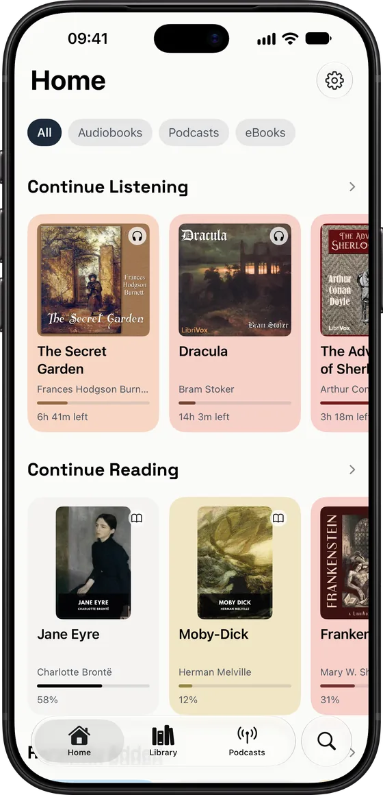
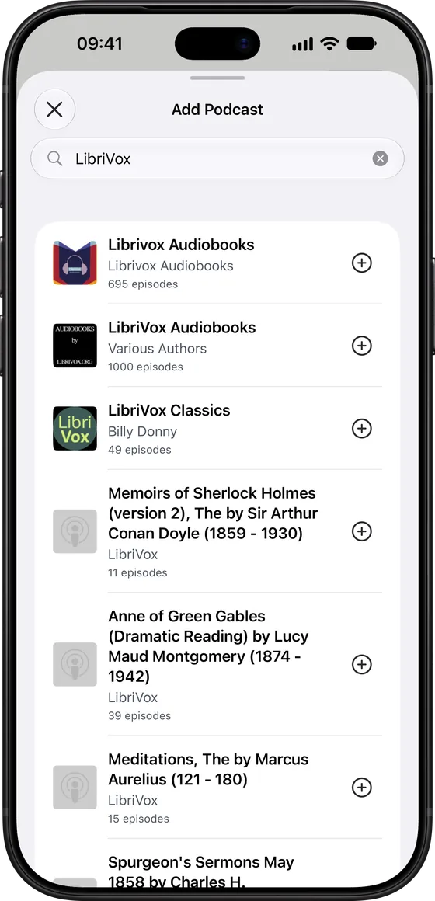
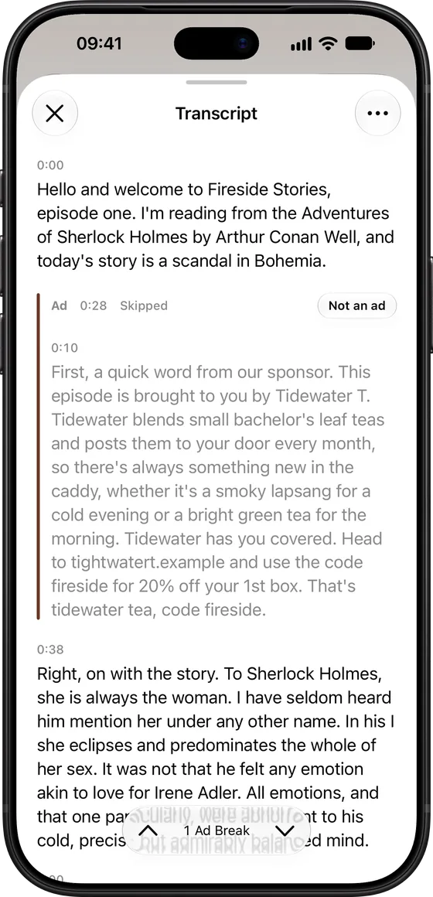
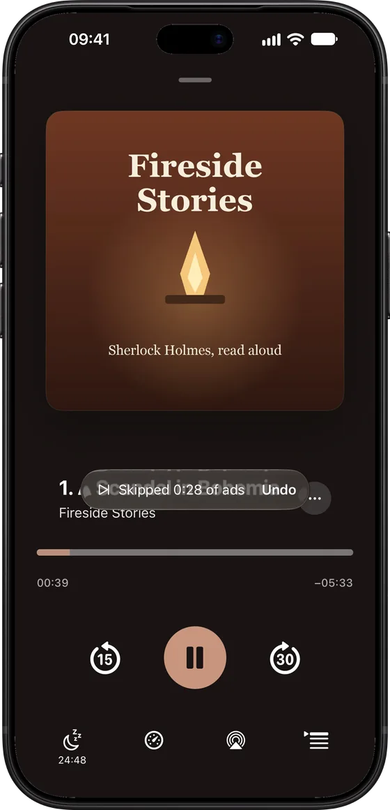
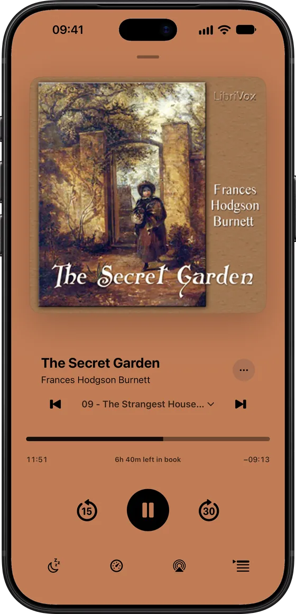
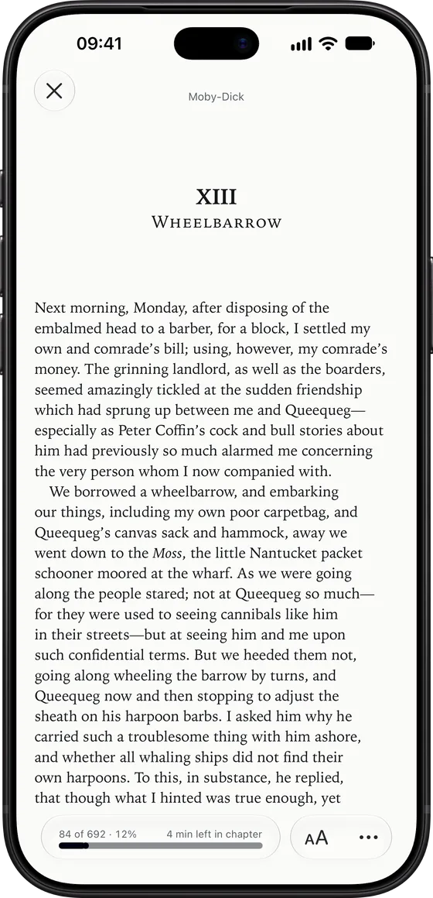
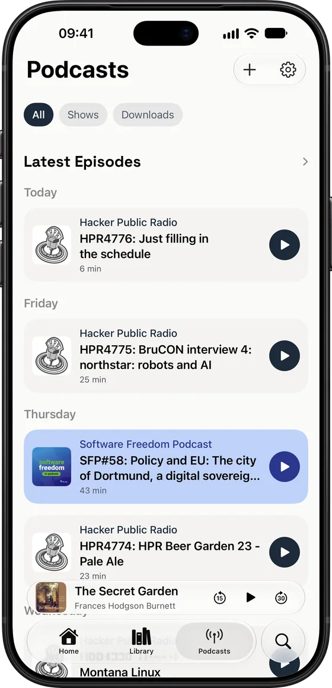

A proper iPhone and iPad app for Audiobookshelf. Your audiobooks, podcasts and ebooks, from a server you run yourself.
Join the free beta on TestFlightNeeds iOS 26 or later.


Search for a show or paste its RSS feed link and Whirr will follow it on your phone. No need to add it to your server first, and new episodes turn up in the background.
If you're an admin on your server you can save an episode to Audiobookshelf, or move the whole show across once you know it's a keeper.
Whirr can skip the adverts in podcasts you've downloaded. It works through each episode on your phone, learns the ads that keep coming round, and jumps over them as you listen. If it gets one wrong, one tap puts it back. If it misses one, mark it in the transcript and it'll learn it.
Turn it on in Settings.


Open a transcript of any downloaded episode. It follows along as you listen, you can search it, and tapping a sentence takes you straight there (English only for now).
Dozed off mid-chapter? Look Back writes out the last few minutes of the book so you can find the bit you remember and carry on from there.

Chapters, a sleep timer, playback speed and AirPlay. Your place syncs back to Audiobookshelf, so you can pick up on another device where you left off.

Whirr reads the EPUBs in your library (DRM-free ones) and keeps your reading position on the server with everything else.

Download anything before the flight or the Tube and it plays without a signal.
The Apple Watch app plays downloaded audiobooks, and works as a remote for your phone.
Whirr has no account of its own and collects no data about you. No analytics and no ads. If you turn on iCloud sync, your podcast state goes to your own private iCloud database, which only you can read.
It's open source under the GPL, so you can check all of that for yourself.